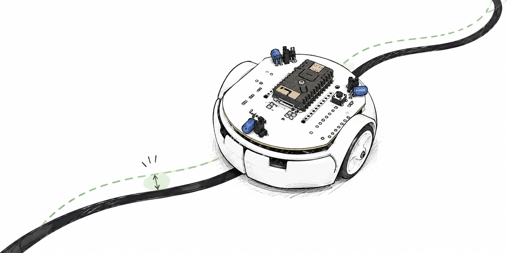

Line Following
Build on the supplied line-following example to investigate how reliably the robot can follow a route, recover from deviations, or complete a course under different conditions. You may want to experiment with different line widths, different robot velocity, or even multiple robots.
For example, you could attempt to identify the highest stable robot velocity in simulation, and then look to evaluate how well this compares to reality. Working in the opposite direction, you could detemrine the highest stable velocity in reality, and look to improve the simulation model so that is demonstrates the same bounds of operation. Your experiments should critically examine the differences between the digital twin and physical robot, using these discrepancies to investigate the assumptions, limitations and behaviour of the model.

Robot elements
The five surface reflectance sensors provide information about the line, the motors produce corrective motion, and odometry can describe the resulting path.
Robot–Digital Twin comparison
The comparison may depend on sensor response, surface and lighting conditions, motor dynamics, control timing, wheel slip, and how small errors accumulate around the route.